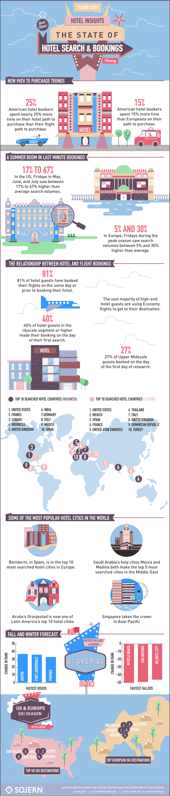
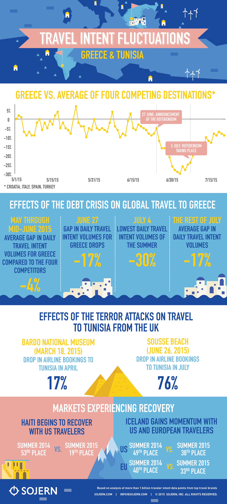
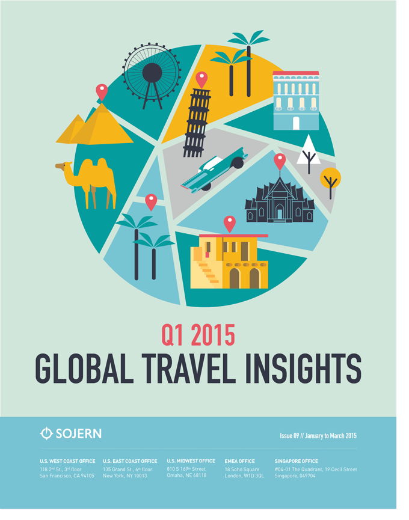

Sojern releases reports and infographics using travel intent data to show how travelers are planning trips, searching for destinations and moving around the globe.
Sojern released an interactive report looking at the nuances of consumers' path to purchase. The report examines how the path to purchase is increasing and that booking lead times are decreasing. Using the data points pulled for the report, I created a visual style and infographic to tell the story of consumers' hotel purchasing behaviors. 
Travel Weekly is a monthly series of infographics looking at different data points surrounding how people travel globally. 
Sojern's global travel insights report and infographic is quarterly review of travel intent data points globally. This Q1 Global Travel Insights report has been featured in LA Times and USA today.
